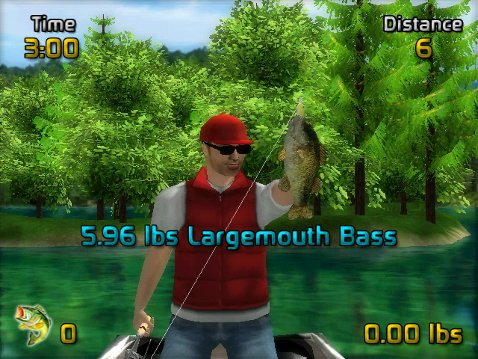

15 |
Fish Fighting |
 |
|

If you successfully attract a fish to your lure, the fish will bite. At this point you will have just a few seconds to set the hook in the fish’s mouth before it spits out the lure.
At this point the fish fight truly begins. There are two key elements of fish fighting. The first is managing the Tension Meter. To catch a fish you must reel it in close to the boat while avoiding high tensions that can break the fishing line. Tension increases both from reeling and from the fish pulling away from the fisherman. You can’t control the actions of the fish, so when the tension gets high you can stop or slow down reeling to reduce the tension before the fishing line breaks. The second key element of fish fighting is responding to rod actions. As the fish struggles to get away you will be prompted with rod actions on the screen. You must respond to these actions within a few seconds, otherwise the fish will spit out the hook.
In addition to an on-screen message indicating the rod action needed, an icon will display the exact controls to use if Rod Action Hints is enabled in the Options Menu. Once the fish is reeled close to the boat you will be prompted to “Pull it In!” If you don’t grab the fish within a few seconds you won’t lose the fish, but you will need to perform another rod action before getting another chance to pull the fish into the boat.
After a successful catch the species and weight will be displayed, and messages may indicate achievements such as personal best catch weight or a newly unlocked lure. |
 to set the hook.
to set the hook. ,
,  ,
,
 , or
, or  to perform the prompted rod action.
to perform the prompted rod action. |
 |
 |